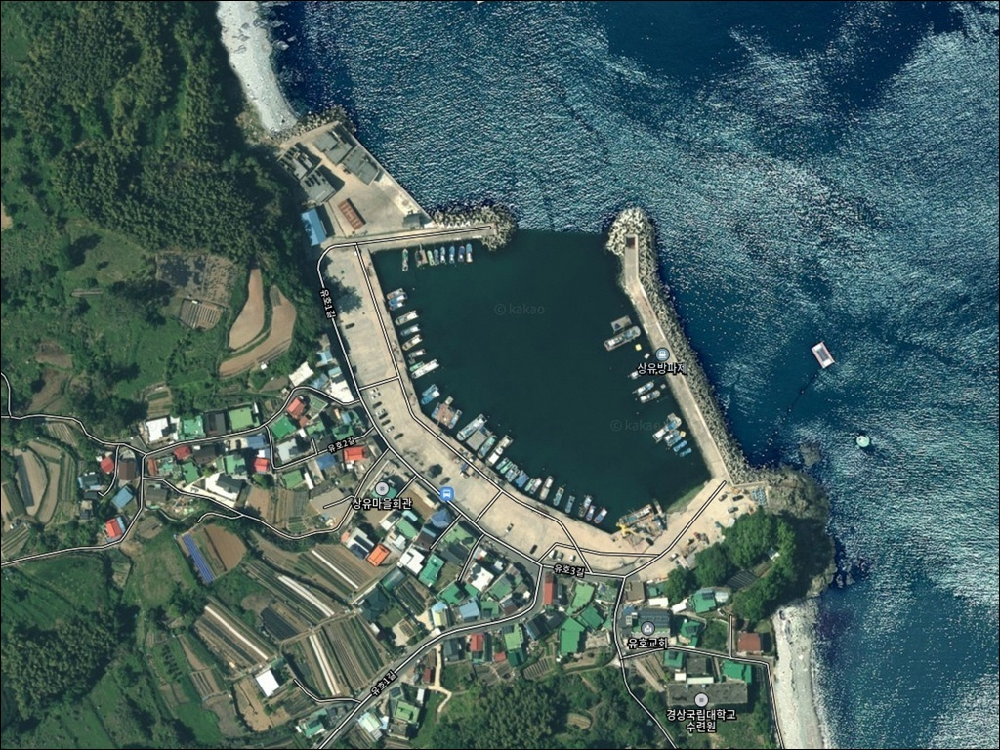
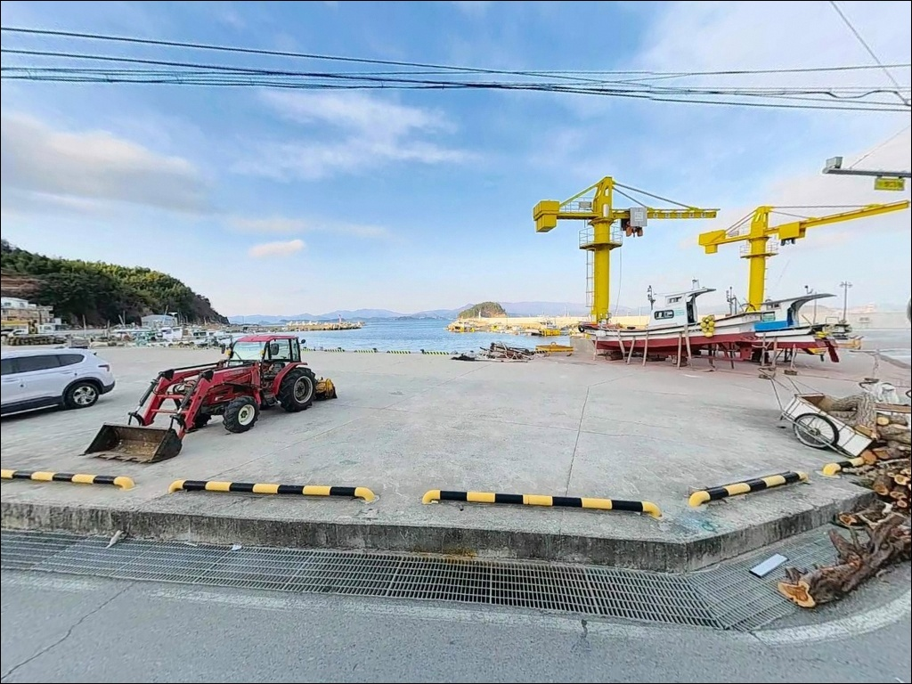
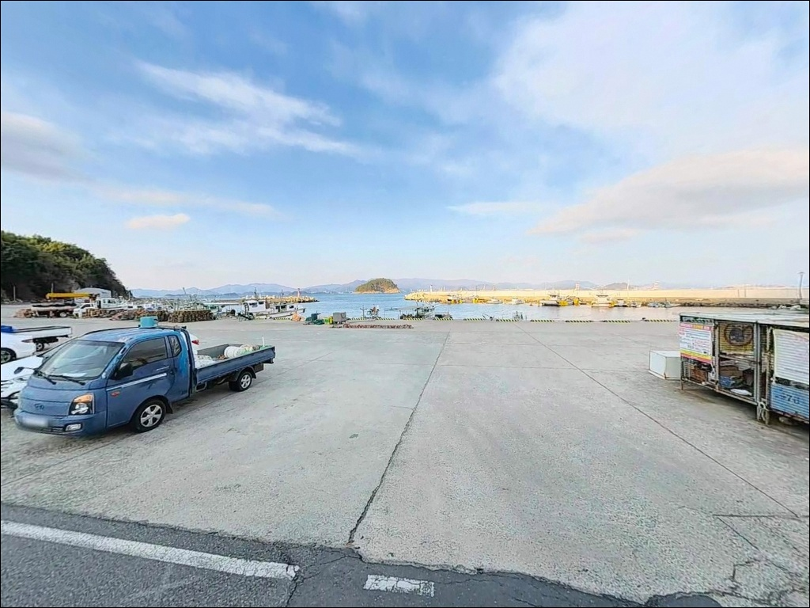
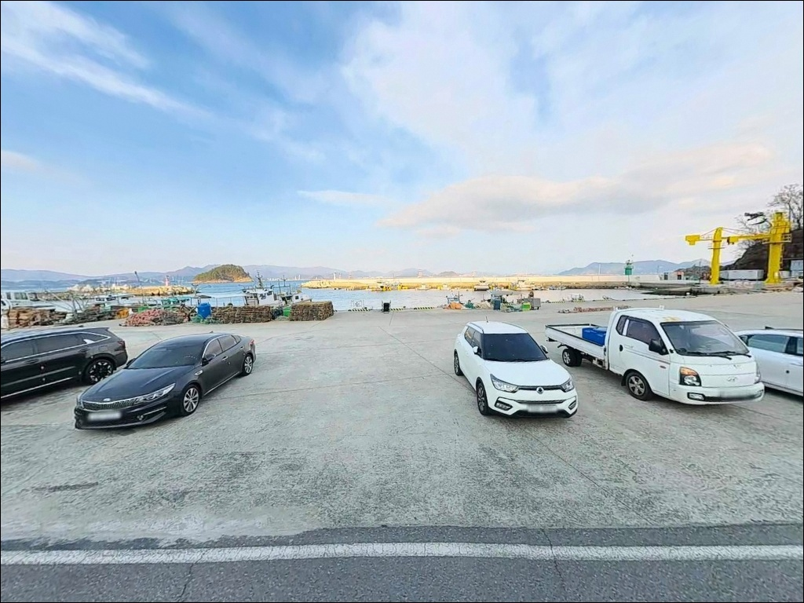
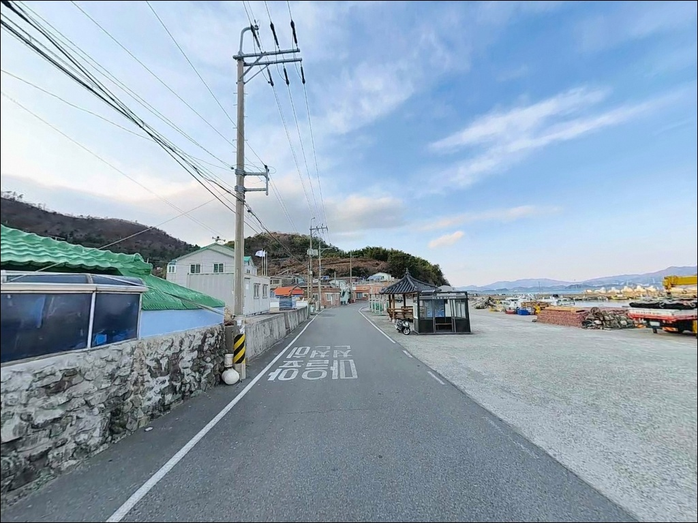
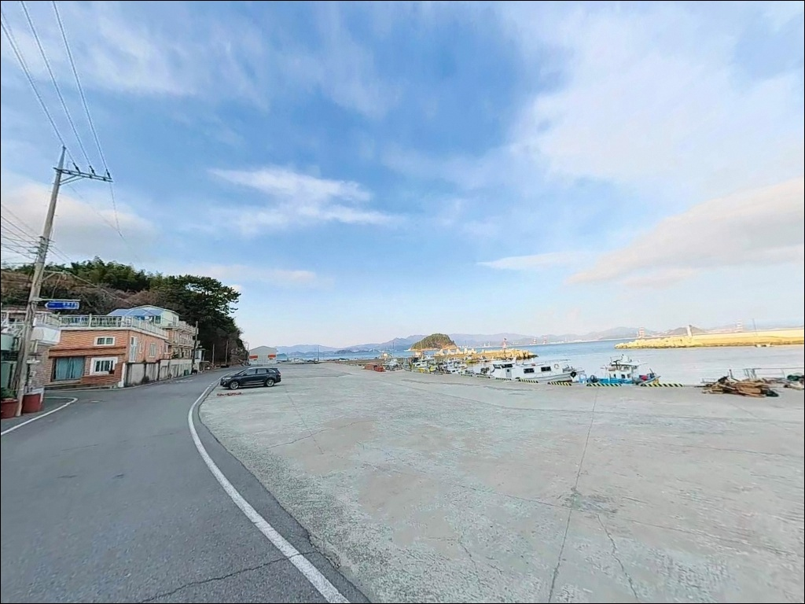
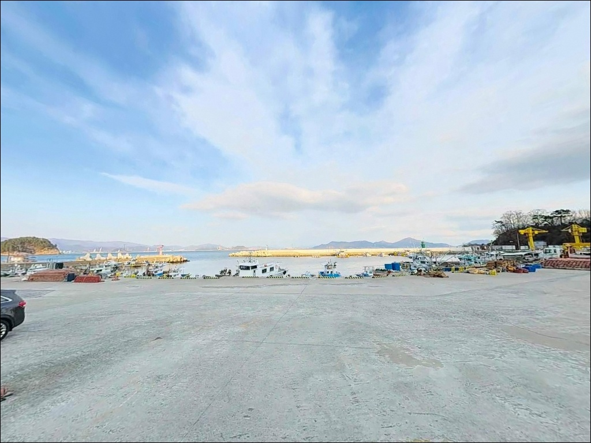
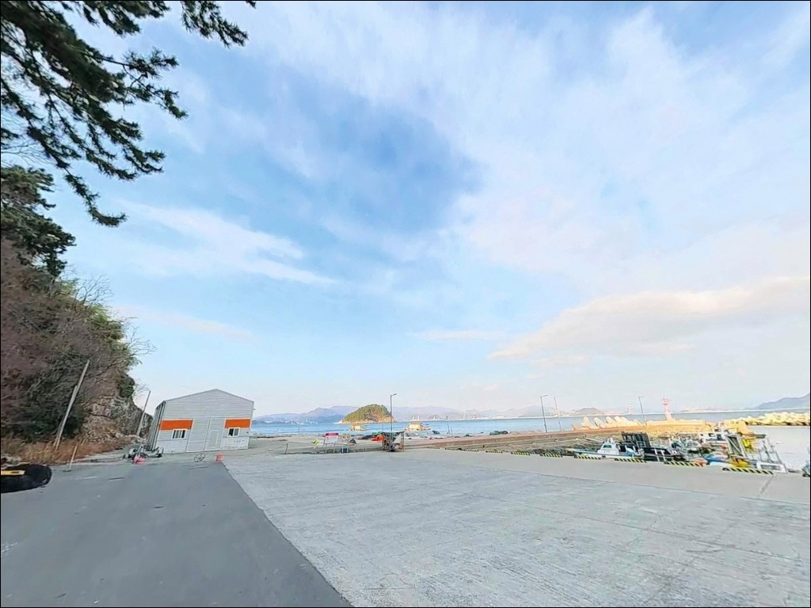
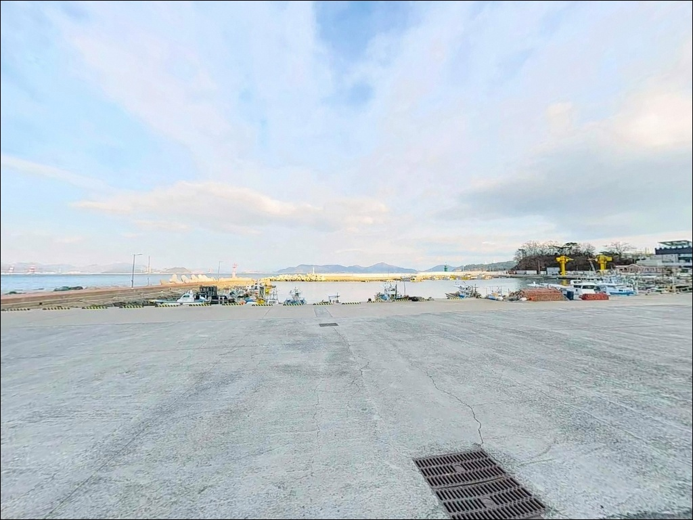

거제 상유방파제, 사릿물 조류 세질 때 정조 타이밍에 터진 감성돔 입질
이 페이지에는 광고(제휴 링크 포함)가 있으며, 광고 링크를 통해 구매하면 운영자가 판매 수익 또는 수수료를 받을 수 있습니다. 포인트 사진: 카카오맵 스카이뷰·로드뷰. 이 페이지의 지도·사진 이미지는 카카오맵의 실제 서비스 이미지와 다를 수 있습니다.


포인트 안내
상유방파제
경남 거제시 장목면 유호리 449-19
거제 북부 상유방파제를 처음 찾는 낚시인이
가장 많이 놓치는 판단은 조류 세기입니다.
거가대교 수로 영향을 받는 이 포인트는
사릿물 전후에 채비 컨트롤 자체가 어려워지므로,
물때 계산 없이 도착하면
외항 끝단 자리가 비어 있어도 쓸 수 없는 상황이 됩니다.
이 글은 상유방파제의 진입 동선, 차박 여건,
지형 기반 낚시 여건, 방문 시 판단 기준에 집중합니다.
조황 단정과 특정 어종 보장은
이 글의 범위에 포함되지 않습니다.

1. 포인트 위치 및 진입 동선 분석
상유방파제는 거제도 북단 유호리 상유마을 앞 해안에 위치합니다.
거가대교 거제 측 기점과 인접해 있어
부산 방면에서 대교를 통과한 뒤
가장 빠르게 접근할 수 있는 방파제 중 하나입니다.
장목면 소재지에서 유호길을 따라 진입하며,
전체 진입 동선은 일반 도로 수준으로 어렵지 않습니다.
마을 안길 구간이 일부 포함되지만
도로 폭은 승용차 교행이 가능한 수준입니다.
캠핑카도 진입에 무리가 없으며,
방파제 입구에 조성된 넓은 물양장 덕분에
대형 차량도 회차가 자유로운 구조입니다.
주차 후 30m 이내로 방파제 포인트에 접근할 수 있어
장비 이동 동선도 짧은 편입니다.
주차는 방파제 입구 물양장을 기본으로 하며,
수십 대가 동시에 수용 가능한 넓은 공터입니다.
해안도로 측면 공터도 추가 주차 후보로 활용됩니다.
단, 물양장은 어선 작업이 이루어지는 공간이므로
어민 조업 동선을 막지 않는 자리를
주차 전 먼저 확인하는 것이 기본 매너입니다.

2. 차박 환경 평가 및 야간 체류 여건
물양장 공터는 평탄하고 넓어
승용 SUV부터 캠핑카까지 차박 공간으로 활용할 수 있습니다.
거가대교 경관 조명 덕분에 야간에도
주변 시야가 어느 정도 확보되며,
교량 야경이 정면으로 들어오는 조망도 이 포인트의 특징입니다.
다만 방파제 끝단으로 갈수록 조명이 약해지므로
야간 낚시 시 개인 헤드랜턴은 필수입니다.
상유마을은 소규모 어촌으로 민가 밀집도가 낮아
프라이버시는 상대적으로 양호한 편이며,
거가대교 인접 특성상
교량 통행 소음이 일부 영향을 주는 환경입니다.
어민 조업이 이루어지는 물양장 안쪽 깊숙이
차량이나 장비를 배치하면
작업 동선에 방해가 될 수 있으므로,
물양장 입구 부근 공간만 활용하는 것이
차박 매너의 기본입니다.


3. 주변 편의시설 및 인프라 현황
상유마을 입구 인근에 공중화장실이 있어
도보 이동이 가능합니다.
마을 내 소형 매점이 있으나 영업 시간이 불규칙하므로,
현장 도착 후 의존하는 방식은 현실적이지 않습니다.
출발 전 사전 보급이 기본인 포인트입니다.
장목면 소재지까지 약 3km 거리로,
편의점과 식당이 자리해 있어
긴급 보급 용도로 활용할 수 있습니다.
낚시 미끼와 용품은 장목면 인근보다
거제시 중심권 낚시점 이용이 현실적이므로
채비와 미끼는 출발 전에 갖추는 편이 좋습니다.
응급 상황에 대비한 비상약품과 연료도
출발 전 확인해 두시기 바랍니다.

4. 방문 전 준비사항 및 체크 포인트
가장 먼저 확인할 것은 물때입니다.
바다타임에서 유호리 기준 물때표를 확인하고
사릿물 전후 타이밍은 피하는 것이 기본 전략입니다.
조금 전후 또는 만조·간조 전후를 노려
출발 시각을 맞추시기 바랍니다.
거가대교 인접 해역은 기상 변화가 빠른 편입니다.
당일 아침 기상청 해상 예보를 다시 한번 확인하고
바람 방향과 세기를 체크한 뒤 진입하는 것이
포인트 낭비를 막는 조건입니다.
외항 테트라포트 구간 밑걸림이 있으므로
여분 채비는 넉넉하게 준비하는 것이 좋습니다.
방파제 끝단과 테트라포트 구간은
파도와 미끄럼 위험이 있으므로
구명조끼와 미끄럼방지 신발은 기본 안전 장비입니다.
야간 낚시 시 헤드랜턴을 반드시 착용하고,
단독 진입 시에는 지인에게 위치를 알려 두시기 바랍니다.
물양장에서 낚시 중에는 어민 조업 동선을 먼저 파악하고
자리를 정하는 것이 현장 매너의 기본입니다.

5. 조류가 강할 때 상유방파제에서 자리를 고르는 기준
상유방파제는 유호항 상부에 위치한
큰 방파제와 물양장 연결형 작은 방파제로 구성됩니다.
큰 방파제 외항 측에는 테트라포트가 설치되어 있고,
내항은 석축·콘크리트 직벽 구조입니다.
바닥은 사질과 여밭이 혼재하며,
방파제 끝단 외항 기준 수심은 8~12m 수준입니다.
거가대교 교각과 연결된 깊은 골이 인접해
조류 소통이 원활한 구조입니다.
방파제 끝단 외항 구간은 거가대교 수로 영향으로
조류 소통이 가장 원활해
찌낚시와 루어 반응이 살아나는 자리입니다.
반면 사릿물 전후에는 이 구간 조류가
채비 컨트롤을 어렵게 만드는 수준까지 세집니다.
조류가 강할 때는 외항 끝단보다
내항 쪽 잔잔한 구간이나 방파제 중간 구간이
현실적인 대안입니다.
정조 타이밍에 외항 끝단을 집중 공략하는 방식이
이 포인트를 제대로 활용하는 기본 전략입니다.
출조 전 상유방파제 조황, 거제 장목 낚시 키워드로
최신 조황을 먼저 검색해 보시기 바랍니다.


6. 포인트에 적합한 낚시 스타일 제안
이 포인트에서 가장 잘 맞는 방식 중 하나는
감성돔을 겨냥한 찌낚시입니다.
본류대에 채비를 태워 외항 방향으로 흘리는 방식이
수심 8~12m의 끝단 구간과 잘 어울립니다.
가을 감성돔 시즌에는 끝단과 외해 연결부 구간에서
조과 기대치가 높아지는 구조입니다.
원투낚시는 외항 방향 장타 시
도다리, 보리멸 등 바닥 어종을 기대해볼 수 있으며,
야간에는 붕장어를 노리는 방식이
이 포인트 바닥 지형과 잘 맞습니다.
정조 타이밍에 채비를 멀리 보내
바닥을 천천히 탐색하는 방식이 유효합니다.
에깅과 루어낚시도 이 포인트에서 활용됩니다.
가을 무늬오징어·갑오징어 시즌에는
외항 테트라포트 인접 구간이 포인트로 형성됩니다.
겨울철에는 내항 석축 사이에서
볼락 루어낚시도 가능한 구조입니다.
전갱이·고등어를 대상으로 한 라이트게임은
방파제 중간~내항 구간에서
소형 지그헤드 웜과 카드채비로 운용합니다.

7. 대안 포인트 및 플랜 B 제시
상유방파제 여건이 기대에 못 미칠 때
첫 번째 대안은 하유방파제입니다.
남쪽으로 약 2~3km 거리로,
동일 유호리 해안선에 속해 해역 어종 패턴이 유사합니다.
내항·외해 양쪽 모두 이용 가능한 구조이며,
주차와 편의시설이 상유보다 정비된 편이라
공간 여유가 필요한 경우 첫 번째 대안입니다.
북쪽으로 약 2~3km 거리의 구영방파제는
동일 해역 특성을 공유하며
원투·루어·에깅 모두 대응 가능한 구조입니다.
상유보다 조용한 환경을 원하는 경우
활용하기 좋은 대안입니다.
약 5km 거리의 장목항은
장목면 대표 항구로 규모가 큰 방파제와
넓은 주차장이 함께 갖춰져 있습니다.
인근 편의점·마트·낚시점 등 인프라가 상유보다 풍부해
거점으로 삼기 좋은 대안 포인트입니다.

물때와 조류를 읽으면
상유방파제가 달리 보입니다
찌낚시로 감성돔을 노리거나
야간 원투로 붕장어를 기다리는 낚시인이라면
상유방파제의 지형 조건은 잘 맞는 구조입니다.
거가대교 수로가 만드는 조류 흐름이
어종 회유 길목을 형성하고,
외항 끝단과 내항 구간이 서로 다른
낚시 스타일을 동시에 수용하는 복합형 포인트입니다.
다만 물때 확인 없이 사릿물 전후에 진입하면
외항 끝단이 비어 있어도
채비 운용이 사실상 불가능해집니다.
진입 전 물때 판단이
이 포인트 방문 성패를 가르는 첫 번째 조건입니다.
차박과 낚시를 함께 계획하는 여행자라면
넓은 물양장 공터와 거가대교 야경이 조합된
상유방파제는 거제 북부에서
조용한 하룻밤을 보내기에 나쁘지 않은 선택입니다.